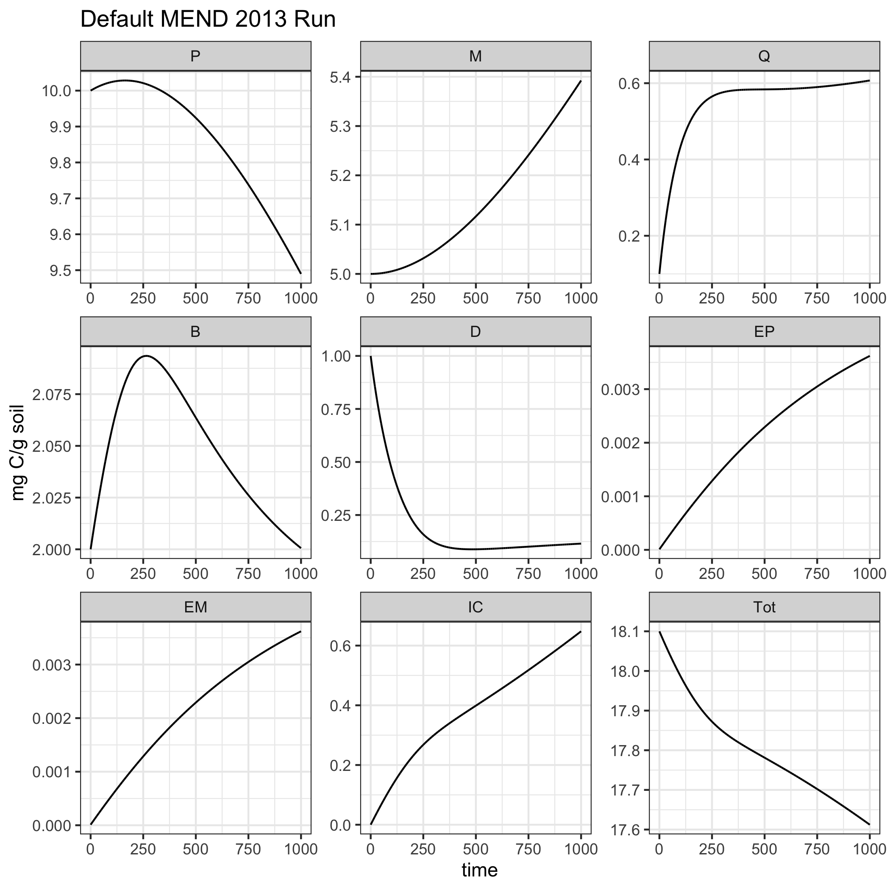
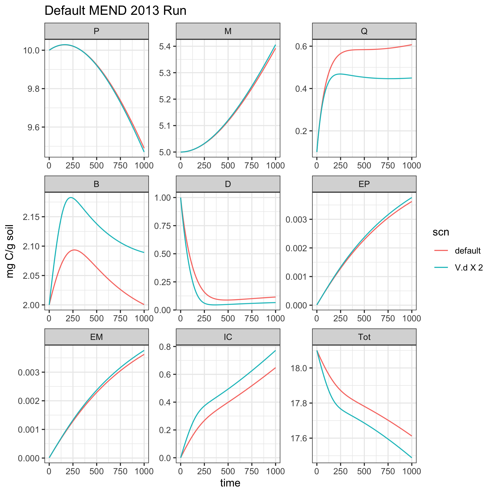

How To: Set up and solve MEND from Wang et al. 2013
MEND2013.RmdObjective
The goal of MENDplus is to provide user with a flexible framework that to explore how parametric and structural uncertainty impact mircobical soil carbon dynamics. In this vignette will demonstrate how to set up, solve, and modify the basic MEND documented in Wang et al. 2013.
About MEND 2013
Start by setting up the R enviornment.
The 2013 MEND model is a system of differential equations that describe soil carbon dynamics. There are 8 different carbon pools represented as the circles that are connected by 12 arrows, which represent the fluxes between carbon pools.

Fig 1: conceptual diagram of MEND from Wang et al. 2013
To use an ode sovler to solve MEND we need, intial state values (the size of the pools) and a table of model parameter values. For this example all of these values are provided by the Wang et. al 2013 documeantion paper.
A Basic Run
# Define the size of the different MEND 2013 carbon pools. state <- c(P = 10, M = 5, Q = 0.1, B = 2, D = 1, EP = 0.00001, EM = 0.00001, IC = 0, Tot = 18.10002) # Define a table of MEND parameters. # MENDplus containts a dataframe of the default parameter values from Wang et al. 2013. param <- MENDplus::MEND2013_params
So to solve for the 2013 MEND model configuration use the solver function. The solver function let’s the user define the carbon pools and carbon fluxes, latter on we will demonstrate how to take advantage of this to explore different configurations of MEND.
MEND2013_example1 <- solver(params = param, time = seq(0, 1e3, by = 0.1), state = state, carbon_pools_func = MEND2013_pools, carbon_fluxes_func = MEND2013_fluxes)
Plot the results.
ggplot(data = MEND2013_example1) + geom_line(aes(time, value)) + facet_wrap("variable", scales = "free") + theme_bw() + labs(title = 'Default MEND 2013 Run', y = "mg C/g soil")

Change Parameters
In this example we will change the V.d the max doc uptake for microbial biomass growth. When V.d increases more DOC can be taken up by the microbial biomass, so we would expect the B (microbial biomass pool) to be larger the V.d x 2 MEND 2013 simulation.
# Make a copy of the default MEND 2013 parameters and doubble the V.d value. doubble_Kd <- MENDplus::MEND2013_params doubble_Kd[parameter == 'V.d', ]$value <- MENDplus::MEND2013_params[parameter == 'V.d', value] * 2 # Now solve the MEND2013 model with the new parmeters. The only difference between the set up # for MEND2013_example2 and MEND2013_example1 is the parameter data frame passed into the solver. MEND2013_example2 <- solver(params = doubble_Kd, time = seq(0, 1e3, by = 0.1), state = state, carbon_pools_func = MEND2013_pools, carbon_fluxes_func = MEND2013_fluxes)
Compare the two simulations!
# Add the smilulation names as columns and combine into a single data frame for visualization. MEND2013_example1$scn <- 'default' MEND2013_example2$scn <- 'V.d X 2' rslt <- rbind(MEND2013_example1, MEND2013_example2) ggplot(data = rslt) + geom_line(aes(time, value, color = scn)) + facet_wrap("variable", scales = "free") + theme_bw() + labs(title = 'Default MEND 2013 Run', y = "mg C/g soil")

As we were expecting the biomass pool is larger in the V.d X 2 simulation!
sessionInfo() #> R version 3.6.3 (2020-02-29) #> Platform: x86_64-apple-darwin15.6.0 (64-bit) #> Running under: macOS Mojave 10.14.6 #> #> Matrix products: default #> BLAS: /Library/Frameworks/R.framework/Versions/3.6/Resources/lib/libRblas.0.dylib #> LAPACK: /Library/Frameworks/R.framework/Versions/3.6/Resources/lib/libRlapack.dylib #> #> locale: #> [1] en_US.UTF-8/en_US.UTF-8/en_US.UTF-8/C/en_US.UTF-8/en_US.UTF-8 #> #> attached base packages: #> [1] stats graphics grDevices utils datasets methods base #> #> other attached packages: #> [1] ggplot2_3.3.2 MENDplus_0.1.0 #> #> loaded via a namespace (and not attached): #> [1] compiler_3.6.3 pillar_1.4.4 tools_3.6.3 digest_0.6.25 #> [5] evaluate_0.14 memoise_1.1.0 lifecycle_0.2.0 tibble_3.0.1 #> [9] gtable_0.3.0 pkgconfig_2.0.3 rlang_0.4.6 bibtex_0.4.2.2 #> [13] rstudioapi_0.11 yaml_2.2.1 pkgdown_1.5.1.9000 xfun_0.14 #> [17] withr_2.2.0 stringr_1.4.0 dplyr_1.0.0 knitr_1.28 #> [21] desc_1.2.0 generics_0.0.2 fs_1.4.1 vctrs_0.3.1 #> [25] tidyselect_1.1.0 gbRd_0.4-11 rprojroot_1.3-2 grid_3.6.3 #> [29] deSolve_1.28 glue_1.4.1 data.table_1.12.8 R6_2.4.1 #> [33] Rdpack_1.0.0 rmarkdown_2.3.1 farver_2.0.3 purrr_0.3.4 #> [37] magrittr_1.5 backports_1.1.8 scales_1.1.1 htmltools_0.5.0 #> [41] ellipsis_0.3.1 assertthat_0.2.1 colorspace_1.4-1 labeling_0.3 #> [45] stringi_1.4.6 munsell_0.5.0 crayon_1.3.4